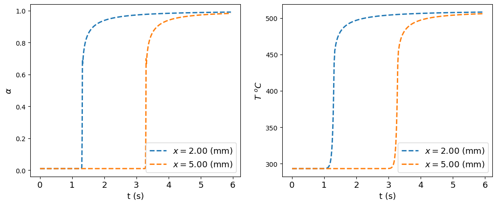

Geubelle Research Group
- Qibang Liu - qibang@illinois.edu
- Michael Zakoworotny - mjz7@illinois.edu
- Philippe Geubelle - geubelle@illinois.edu
- Aditya Kumar - aditya.kumar@ce.gatech.edu
This is the report of the FP problem you just solved.
The propagation of a polymerization front can be described by a thermo-chemical model based on two coupled reaction-diffusion equations expressed in terms of the temperature \( T \) and degree of cure \( \alpha \) as follows,
where the first equation describes heat diffusion, and the second equation describes the cure kinetics of the FP reaction.
\( g(\alpha) \) is the reaction model, which is chosen from the kinetics_library module as:
The descriptions and values of the variables in Eq. (1) and Eq. (2) are shown below based on your input:
| Variable | Description | Value |
|---|---|---|
| \( \kappa \) \( \left(\frac{\mathrm{w}}{\mathrm{mK}}\right)\) | Thermal conductivity | 0.150 |
| \( \rho \) \( \left(\frac{\mathrm{kg}}{\mathrm{m}^3}\right) \) | Density | 980.0 |
| \( C_p \) \( \left(\frac{\mathrm{J}}{\mathrm{kg}\cdot K}\right) \) | Specific heat | 1600.0 |
| \( H_r \) \( \left(\frac{\mathrm{J}}{\mathrm{kg}}\right) \) | Total enthalpy of reaction | 3.50e+05 |
| A \( \left(s^{-1}\right) \) | Pre-exponential factor | 8.55e+15 |
| E \( \left(\frac{\mathrm{J}}{\mathrm{mol}}\right) \) | Activation energy | 1.1075e+05 |
| \( m \) | Order of reaction | 0.770 |
| \( n \) | Order of reaction | 1.720 |
| \( C \) | Diffusion constant | 14.480 |
| \( \alpha_c \) | Critical conversion constant | 0.410 |
The 1D FEM simulation settings are shown below:
| Variable | Description | Value |
|---|---|---|
| \( T_0 \) \( \left(^oC \right) \) | Initial temperature | 20.00 |
| \( \alpha_0 \) | Initial degree of cure | 0.010 |
| \( T_{trig} \) \( \left(^oC \right) \) | Trigger temperature | 236.6 |
| \( t_{trig} \) | Duration of trigger (s) | 1.00 |
| \( x_{max} \) (m) | Length of domain | 1.00e-02 |
| \( t_{end} \) (s) | Time span of the simulation | 10.0 |
| \( \Delta t (s)\) | Time step | 1.00e-03 |
| \( \Delta x \) (m) | Element size | 2.00e-05 |
| output_t | Save frequency in time | 10 |
| output_x | Save frequency in space | 1 |
The evolution of temperature \(T \) and degree of cure \( \alpha \):
The frontal position \( x_{fp}(t)\) is extracted as the location where \( \alpha = 0.5 \):
The front velocity is obtained by linear regression of the front position vs time curve, and the value is \( V_{fp} = 1.5149 \) (mm/s).
The evolution of degree of cure and temperature at the points \( x = 2.00 \) (mm), \( x = 5.00 \) (mm) are shown below,
